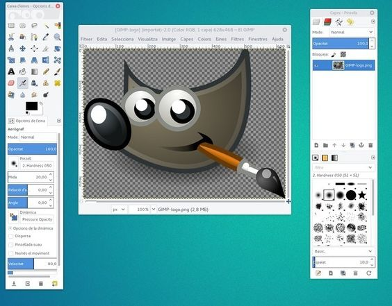

Edición de Imágenes
GIMP:
GIMP es un programa de edición de imágenes gratuito y de código abierto, ideal para trabajos que requieren retoques fotográficos, creación de gráficos y manipulación avanzada de imágenes. Ofrece herramientas potentes similares a las de Photoshop, como capas, máscaras y filtros lo que lo convierte en una opción muy versátil.
Funcionalidades: Retoque de fotos, dibujo a mano alzada, composición de imágenes, manejo de capas y trabajo con diferentes formatos.
Disponibilidad: Gratuito, compatible con Windows, macOS y Linux.
